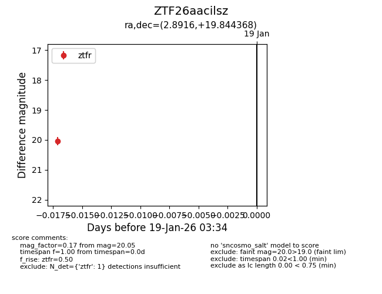
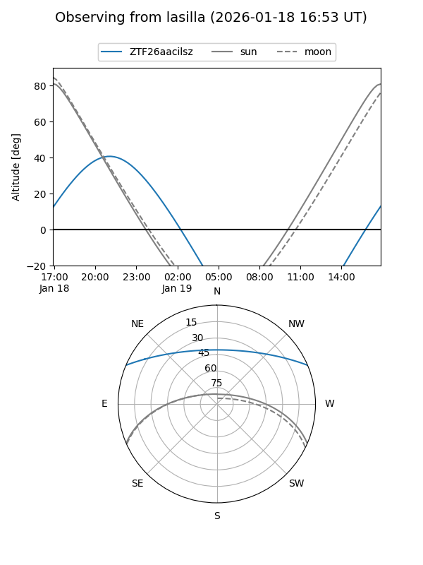
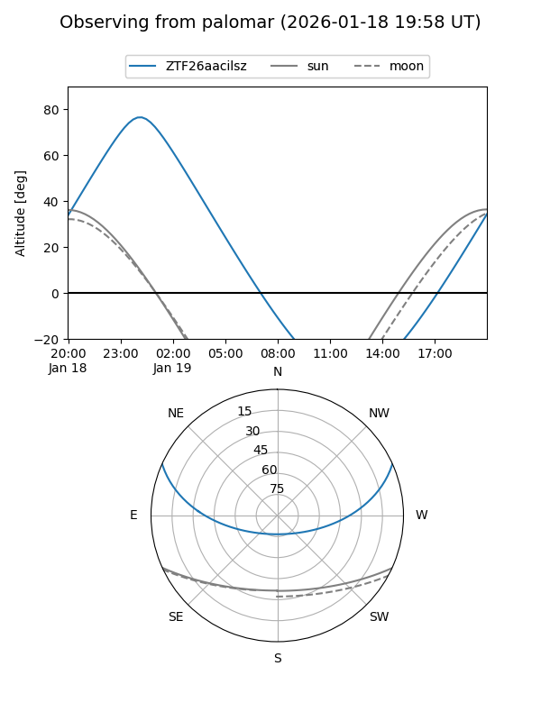

ZTF26aacilsz
Target ZTF26aacilsz at 2026-01-21 03:36
Aliases and brokers:
FINK: link
Lasair: link
ALeRCE: link
alt names
ZTF26aacilsz (ztf,fink_ztf)
Coordinates:
equatorial (ra, dec) = 2.8916,+19.84437
equatorial (HMS+DMS) = 00:11:33.99,+19:50:39.72
galactic (l, b) = (110.2672,-42.04478)
Flags:
Photometry:
last ztfg=19.17, ztfr=20.05
1 ztfg, 1 ztfr detections
Lightcurve

Visibility


Additional plots